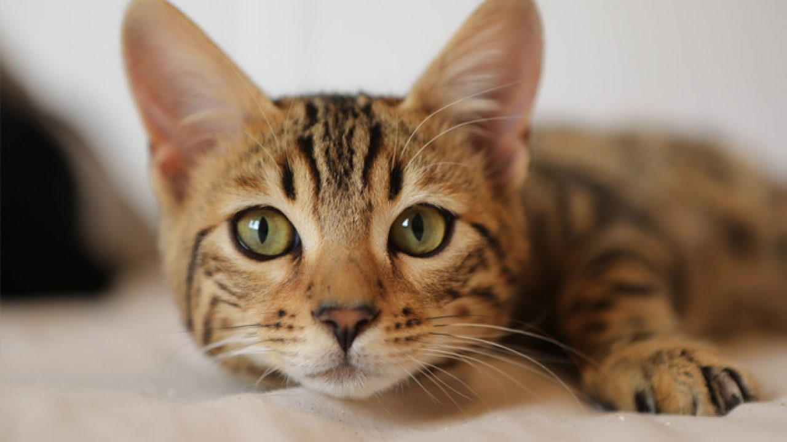

es un dulce gatito de poco más de 2 años, al principio un poco tímido luego muy dulce, es ordenado, limpio muy inteligente, es una gran compañía, está esterilizado con chip y vacunas. Le gusta acompañar y regalonear.
Bigotes
es un machito de poco más de 1 año, encantador, juguetón, inteligente, al principio es muy desconfiado pero nada que no remedie un Churu. Es muy regalón y sociable, hay que tenerle paciencia para que se sienta a gusto.
Princesa
Esta gatita en adopción es una dulce y amorosa criatura. Tiene aproximadamente 6 meses de edad y es una gata doméstica de pelo corto con un hermoso pelaje gris y blanco
Kitty patitas suaves
Esta pequeña gatita está en adopción y busca su hogar perfecto. Es una felina adorable y cariñosa, que le encanta jugar y acurrucarse en tu regazo para recibir mimos y caricias.
cariñosito
Este adorable gatito en adopción es un felino de raza mixta que ha sido rescatado y está buscando un hogar amoroso. Es un gatito joven, juguetón y cariñoso que disfruta de la compañía humana y de recibir mimos.

Francisca
es una bella gatita y elegante, es amorosa, regalona, le gusta jugar, acompañar y ronrronear. Tiene poco más de un año, está esterilizada, vacunada y chipeada. Es muy intrépida y tiene su carácter.